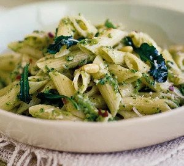

Back
Broccoli Pesto Pasta

Description
A zesty, garicky and spicy pasta dish with a generous serving of delicious green pesto.
This quick and easy dinner is perfect after a busy day at work or when you're just tight on time.
Ingredients
- 400g penne, farfalle or conchiglie pasta
- 250g broccoli, cut into florets
- garlic clove, peeled
- 1 large lemon
- ½ tsp dried chilli flakes
Steps
- Tip the pasta into a large pan of boiling salted water and cook according to pack instructions.
Meanwhile, bring a smaller pan of salted water to the boil, add the broccoli and boil for 4 minutes.
- Drain the broccoli and return it to the pan.
Lightly mash the broccoli with a potato masher or fork.
Finely grate the garlic and zest the lemon, then mix into the broccoli with the chilli flakes and pine nuts.
Cut the lemon in half and keep for later.
- Drain the pasta and return it to the pan.
Stir in the broccoli pesto and squeeze over the juice of 1⁄2 lemon.
Pour in the olive oil and generously season with salt and pepper.
Spoon in the grated Parmesan, toss the pasta well and serve.